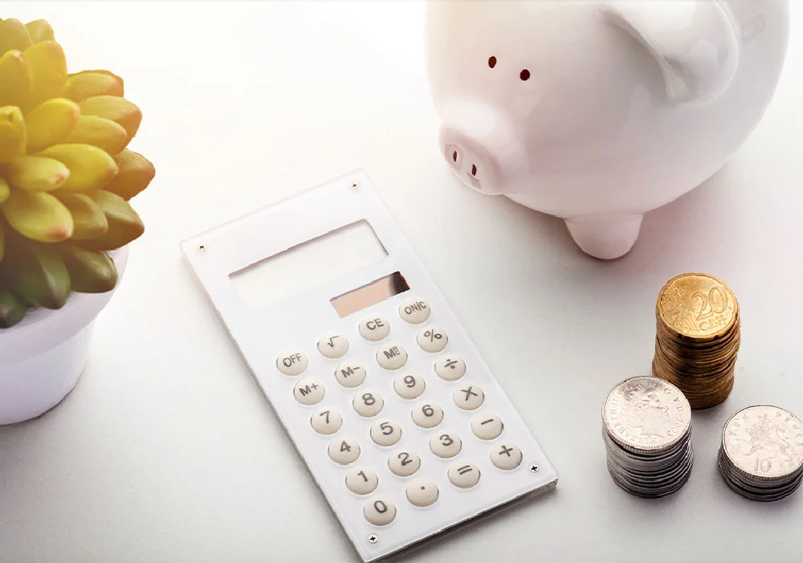
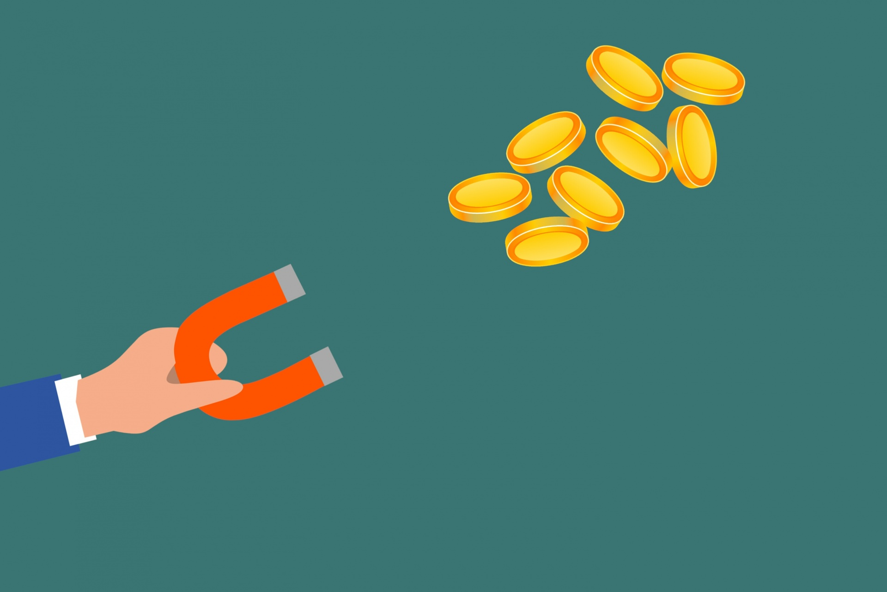
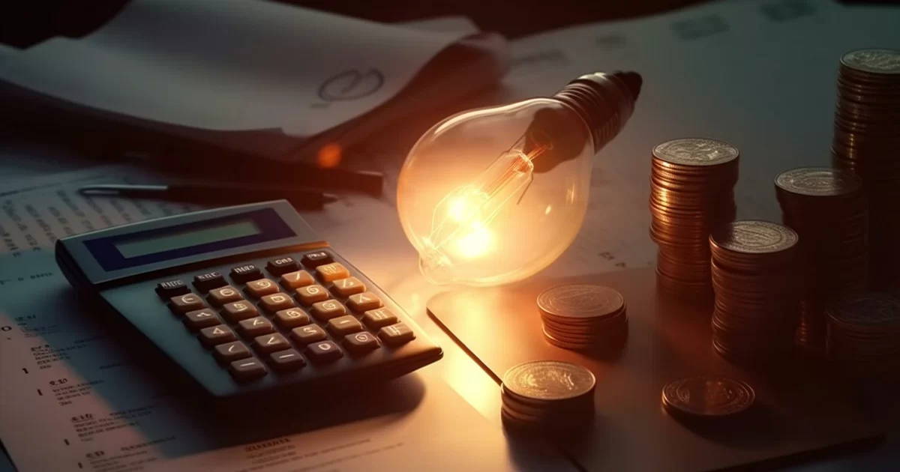

Anote todas as compras, pois desse jeito você tem o controle total dos seus gastos. E nossa aplicação foi desenvolvida para exatamente isso. Você consegue lançar visualizar todos os gastos feitos em determinado período.
Tudo anotado? Muito bem, hora de planejar. Defina metas, compras, viagens, pagamentos de dívidas. O Segredo é foco. Se concentre em uma, duas metas no máximo desde que não saia do seu orçamento, claro. O objetivo desse passo é aprender o auto controle, e evitar os gastos imediatos ou por impulso.
Pode ser o mais difícil. Afinal os gastos desnecessários para um pode não ser para outro, isso é muito pessoal. Mas, comece olhar aqueles cafezinhos diários, almoços de finais de semana, transportes. Será que consegue diminuir, a ponto que um dia você realmente fale: "Não preciso mais" ou "Consigo diminuir isso". Reveja tudo que você anotou na sua planilha do CONSUMO CONSCIENTE, pode ser que algo entre nessa categoria.
Verifique suas dívidas. Existem dívidas mais caras que outras, como cartão de crédito, empréstimos bancários. Essas dívidas têm juros bastante alto se, porventura, não conseguir honrar com o pagamento. Então priorize estas, caso haja algum imprevisto, você estaria blindado contra juros altíssimos.
Construa sua reserva particular. Separe todo mês um valor, coloque em uma conta separada, que de preferência renda juros. Encare a reserva como uma dívida mensal, que você realmente tenha comprometimento em "pagar". De início vai parecer pouco, mas com o tempo vai ter um valor significativo. Mas lembre-se, apenas emergência. Não utilize esse valor para gastos diários. Esse valor irá servir para que em um momento de aperto, você não precise recorrer a empréstimos, ou cartão de crédito.
Concentre seus gastos em apenas um cartão de crédito. Existe sempre o risco de querer gastar mais que o necessário com dois cartões. Em falar cartões, aproveite os benefícios. Escolha cartões que ofereçam milhas, pontos. E nada de cartões com anuidades
Estude investimentos. Taxa de juros, SELIC, CDB e etc. Essas sopas de letrinhas podem te ajudar a acumular seu patrimônio, pois têm retornos maiores que nossa queridinha poupança. Por outro lado, é preciso deixar, na maioria dos casos, o investimento por mais tempo e dependendo, só pode resgatar no vencimento do mesmo.
Não vá ao supermercado sem uma lista de compras. Uma lista, te ajuda a focar realmente no que você precisa, e evitar gastos desnecessários devido a impulsos.
Se atente as contas fixas, como energia, água, gás. Tenha o hábito de acender poucas luzes, fechar torneiras. Diminuir excesso de consumo, é bom para seu bolso e o meio ambiente agradece.
